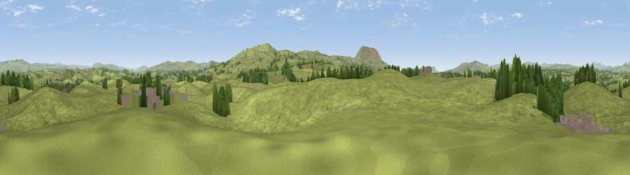

Bomber Hill
#21194 in England · top 47% of its area beats it · near GisburnThe view, rendered

A 360° render of this exact spot computed from the terrain model, tree cover and land cover — summer colours, afternoon light, calibrated against photographs of famous viewpoints. Real trees, hedges and buildings will differ in detail.
The panorama
Grey silhouette: terrain skyline in each direction (720 bearings, Earth curvature and refraction included). Dashed green: skyline with trees (+15 m) and buildings (+8 m) as obstacles. Blue strip: how far the ground is visible on each bearing.
Where the view opens
Wedge length = distance to the farthest visible ground on that bearing (vegetation-aware). Rings at 10, 25 and 50 km.
What fills the view
92% grassland · 5% woodland · 2% built-up · 2% cropland
Angular shares of the visible panorama (visual magnitude), not map area. Landscape diversity 0.16 (0–1 Shannon).
Key numbers
More beautiful places nearby
The staircase of upgrades: each row has a higher view potential than everything closer. Driving times are estimates from straight-line distance, calibrated against real road routing — check an actual route before setting out.
| Place | Direction | Drive | Score |
|---|---|---|---|
| Viewpoint near Barnoldswick | SSE · 3 km | ~7 min | 60.8 |
| Weets Hill | SSE · 4 km | ~9 min | 69.3 |
| Viewpoint near Barley | SSW · 7 km | ~15 min | 76.3 |
| Pendle Hill | SSW · 8 km | ~16 min | 76.5 |
| Parlick | W · 25 km | ~40 min | 77.5 |
| Little Ingleborough | NNW · 27 km | ~43 min | 78.8 |
| Viewpoint near Ingleton | NNW · 28 km | ~45 min | 79.5 |
| Darwen Hill | SSW · 31 km | ~48 min | 80.7 |
53.93054, -2.24591 · source: osm peak · position refined by local search. Computed location — check access rights before visiting.